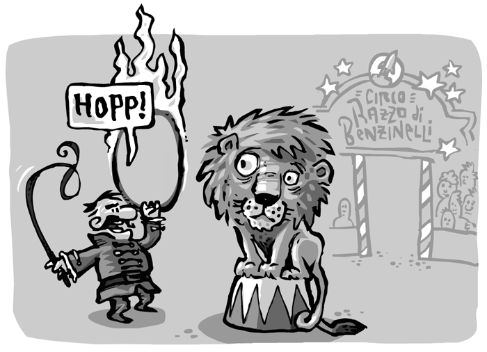

Before long, you'll want to tell the objects in your game to move around, or interact in some way or other.
This is quite easy to do. Somewhere in your game you instantiate a keyboard like so:
@keyboard = new Keyboard
You have to pass the keyboard on to where it is needed, e.g. the lion tamer.
In the lion tamers' update method you can then test if a key was pressed and take action.
if @keyboard.key "space"
@lion.jump()
Perhaps it would be better for the lion tamer to trigger a "hopp" event. The lion will know what's asked of him if he is listening to it. Have a look at events for more information on this approach.
To be honest, despite the headline, Instant Rocket Fuel does not have a similar mechanism for mouseevents just yet. Please check back later...